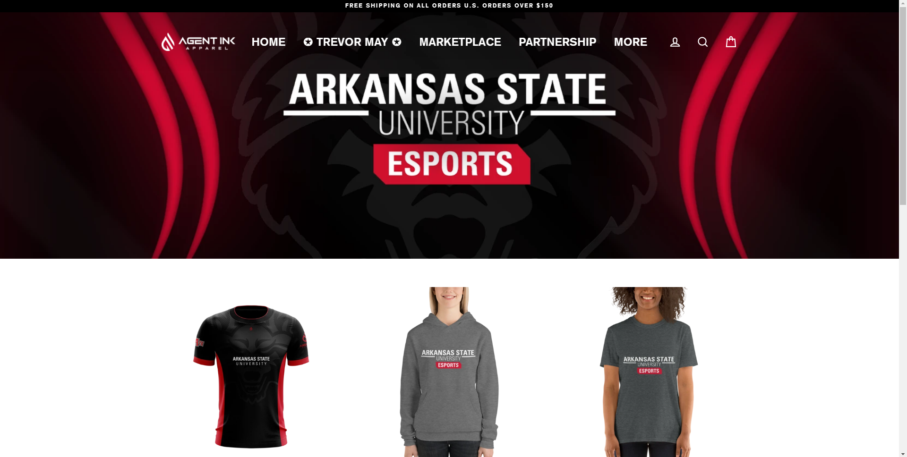

About Me
Hi, I'm Drew Morgan! I'm a Graphic Designer striving to create the best work for my clients, but also use my skills to help others achieve their goals. I've made the most of my time at A-State so far, designing for A-State Esports and The Herald, where I work in teams to finish weekly projects. I also collaborate with producers from ASU-TV to create work in other multimedia areas, such as motion graphics, video editing, and vfx.
Portfolio Work
